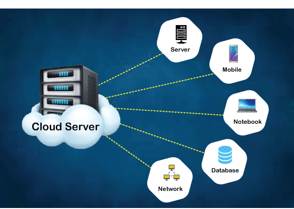

As the world calls it, data is the new oil.With vast installments of Industrial Internet-of-Things (IIoT) infrastructure, data is produced at a rate like never before. Similarly, artificial intelligence (AI) and machine learning (ML) solutions are getting integrated to numerous services, making them “smarter”. However, the data remains fragmented in individual organizational silos inhibiting data value extraction to it’s full potential. Digital marketplaces are emerging to allow data owners to monetize this data. Yet concerns like privacy, security and unfair payment settlement deter adoption of such platforms. In addition, the state-of-the-art platforms are under the control of large multinational corporations with no transparency between buyer and seller in terms of payment details, listing, data discovery and storage. In this work, a novel decentralized platform of digital data marketplace for IoT data has been proposed. The platform leverages a decentralized data streaming network to host IoT data in a reliable and fault tolerant manner. The platform ensures fair trading, data storage and delivery in a privacy preserving manner and trust metric calculation for actors in the network. In order to study the feasibility of the proposed platform, an open source library is developed using Hyperledger Fabric and data network layer built on VerneMQ, the library is deployed on a real-time Google cloud platform. The library is tested and results are analysed for throughput, overheads and scalability...
FAST DATA A Fair Secure and Trusted Decentralized IIoT Data Marketplace enabled by Blockchain
- Industrial Internet of Things (IIoT), Data Marketplace,Blockchain,Smart Contracts.

Sidebar Menu
Concepts
- Industrial Internet of Things (IIoT),
Data Marketplace,
Blockchain,
Smart Contracts.